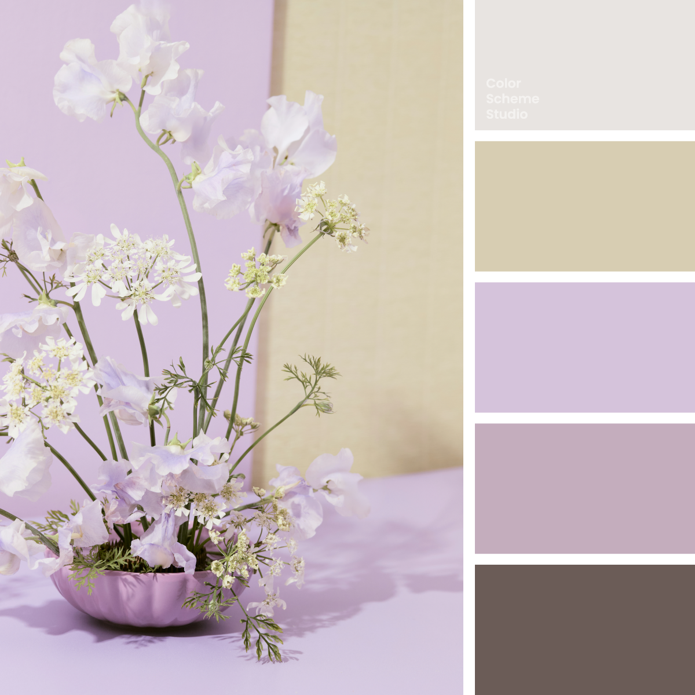

Spring / Pastel
Spring hushed color palette
Chalk White, Warm Ecru, Powder Lilac, Grey Rose, Soft Cocoa. Explore five colours and copy their HEX values.

The palette
Click a hex to copyRGB & CMYK values
| Color | Hex | RGB | CMYK (approx.) |
|---|---|---|---|
| Chalk White | #E8E4E1 | 232 228 225 | 0 2 3 9 |
| Warm Ecru | #D7CDB2 | 215 205 178 | 0 5 17 16 |
| Powder Lilac | #D5C3DB | 213 195 219 | 3 11 0 14 |
| Grey Rose | #C4ADBD | 196 173 189 | 0 12 4 23 |
| Soft Cocoa | #6B5C57 | 107 92 87 | 0 14 19 58 |
Lilac and ecru with a soft cocoa depth
Powder Lilac brings a cool violet note to a group of pale, muted colours. Grey Rose is deeper and redder, while Warm Ecru shifts the combination toward yellow. Chalk White gives these close values a light reference. Soft Cocoa supplies the strongest depth without the sharpness of a near-black. The two small compositions keep all five colours and change their area. With chalk as the main field, lilac feels airy. With cocoa enlarged, the same pale accents feel more enclosed and deliberate. The colour relationships stay gentle while the overall weight changes.
One palette, two different weights
All five colours appear in each small composition.
spoken.
depth.
Photo by micheile henderson on Unsplash. Color studies and application notes by Color Scheme Studio.